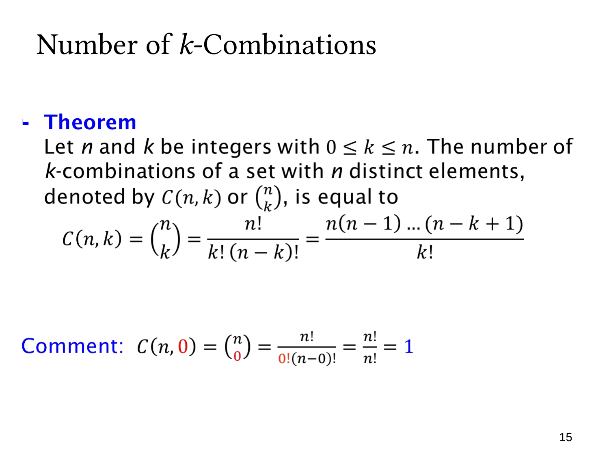

L1.6 · 第 15 页讲解原文
查看这一页课件

组合数公式与空集
n 个不同元素的 k 元组合数，记作 C(n,k) 或 (kn)，读作“n 选 k”。当 0≤k≤n 时，
C(n,k)=(kn)=k!(n−k)!n!=k!n(n−1)⋯(n−k+1).
分子是 k 元排列数。同一组 k 个元素可排成 k! 个不同次序，组合不区分这些次序，因此把排列数除以 k!。例如
C(4,3)=3⋅2⋅14⋅3⋅2=4.
分母中的两个阶乘作用不同：(n−k)! 用来将 n! 截取为选择 k 个位置的连乘；k! 用来去掉已选元素的内部次序。
课件特别指出
C(n,0)=0!n!n!=1.
“不选任何元素”并不是没有方案，而是有唯一的空集。类似地，C(n,n)=1，因为全部选中也只有一个子集。
使用前应确认不重复选择、不关心次序；不能只看到题目中的“选”字就套组合公式。